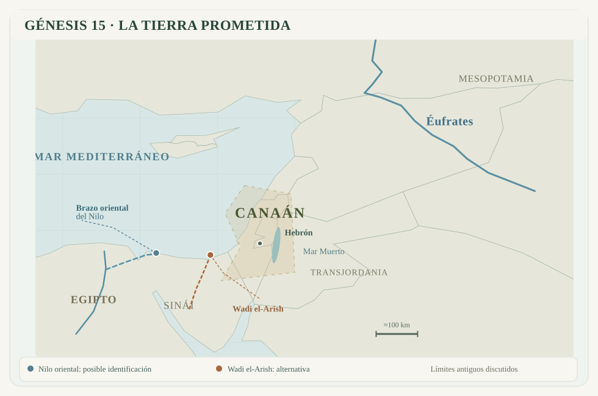

15:1 Después de estas cosas vino la palabra de Jehová a Abram en visión, diciendo: — No temas, Abram; yo soy tu escudo, y tu galardón será sobremanera grande.
15:2 Y respondió Abram: — Señor Jehová, ¿qué me darás, siendo así que ando sin hijo, y el mayordomo de mi casa es ese damasceno Eliezer?104
15:3 Dijo también Abram: — Mira que no me has dado prole, y he aquí que será mi heredero un esclavo nacido en mi casa.
15:4 Luego vino a él palabra de Jehová, diciendo: — No te heredará este, sino un hijo tuyo será el que te heredará.
15:5 Y lo llevó fuera, y le dijo: — Mira ahora los cielos, y cuenta las estrellas, si las puedes contar. Y le dijo: — Así será tu descendencia.
15:6 Y creyó a Jehová, y le fue contado por justicia.105
15:7 Y le dijo: — Yo soy Jehová, que te saqué de Ur de los caldeos, para darte a heredar esta tierra.
15:8 Y él respondió: — Señor Jehová, ¿en qué conoceré que la he de heredar?
15:9 Y le dijo: — Tráeme una becerra de tres años, y una cabra de tres años, y un carnero de tres años, una tórtola también, y un palomino.106
15:10 Y tomó él todo esto, y los partió por la mitad, y puso cada mitad una enfrente de la otra; mas no partió las aves.
15:11 Y descendían aves de rapiña sobre los cuerpos muertos, y Abram las ahuyentaba.
15:12 Mas a la caída del sol sobrecogió el sueño a Abram, y he aquí que el temor de una grande oscuridad cayó sobre él.
15:13 Entonces Jehová dijo a Abram: — Ten por cierto que tu descendencia morará en tierra ajena, y será esclava allí, y será oprimida cuatrocientos años.
15:14 Mas también a la nación a la cual servirán, juzgaré yo; y después de esto saldrán con gran riqueza.107
15:15 Y tú vendrás a tus padres en paz, y serás sepultado en buena vejez.
15:16 Y en la cuarta generación volverán acá; porque aún no ha llegado a su colmo la maldad del amorreo hasta aquí.108
15:17 Y sucedió que puesto el sol, y ya oscurecido, se veía un horno humeando, y una antorcha de fuego que pasaba por entre los animales divididos.109
15:18 En aquel día hizo Jehová un pacto con Abram, diciendo: — A tu descendencia daré esta tierra, desde el río de Egipto hasta el río grande, el río Éufrates;110
15:19 la tierra de los ceneos, los cenezeos, los cadmoneos,
15:20 los heteos, los ferezeos, los refaítas,
15:21 los amorreos, los cananeos, los gergeseos y los jebuseos.

Notas del editor
- 104La expresión hebrea ben-mešeq bêtî, traducida como «mayordomo de mi casa», es de interpretación discutida. Tradicionalmente se ha entendido que Eliezer era el administrador de los bienes de Abram. Este sería el responsable de manejar todos los bienes del clan, incluidas las propiedades, el ganado, los sirvientes/empleados y las transacciones comerciales. Por tanto, sería entendible que fuera la persona en mejor posición para heredar todo ello en ausencia de herederos directos. Sin embargo, el texto no permite determinar si Abram había adoptado formalmente a Eliezer. Además puede existir aquí un juego de palabras entre mešeq y Dammeśeq (damasceno). ↩
- 105Este versículo será especialmente relevante en el Nuevo Testamento para explicar la justificación (salvación) por fe (en Romanos 4:3, Gálatas 3:6 y Santiago 2:23). ↩
- 106Aunque más adelante la Reina-Valera asociará la palabra palomino a ben yonah, esto es, a la cría de la paloma; aquí está traduciendo en realidad el término gozal, que significa “cría de pájaro o pollito”, no necesariamente una paloma. Sin embargo, es una buena suposición ya que las únicas aves sacrificiales que aparecen en la Biblia son tórtolas y palomas y las primeras ya se han mencionado; así que con toda probabilidad el ave elegida por Abraham fue una paloma. ↩
- 107Anticipo de la esclavitud de Israel en Egipto y su posterior éxodo a la Tierra Prometida. ↩
- 108Aquí el amorreo es usado como representación de las tribus cananeas, no porque los amorreos sean particularmente más malvados que el resto. Dios traerá de vuelta a los descendientes de Abraham cuando sea el momento de juzgar a los habitantes de Canaán. ↩
- 109Al parecer, el sentido de este ritual era que el que pasaba por entre los animales divididos se comprometía a cumplir su palabra o a ser masacrado como éstos. Así sólo el horno humeante y la antorcha de fuego pasan entre los animales, interpretados como manifestaciones de la presencia divina. Por ello, el gesto suele entenderse como una representación del compromiso asumido por Dios para cumplir su promesa a Abram. ↩
- 110La identificación del «río de Egipto» es discutida. Se ha propuesto tanto el brazo oriental del Nilo como el llamado torrente de Egipto, habitualmente identificado con el wadi el-Arish, en el norte del Sinaí. ↩